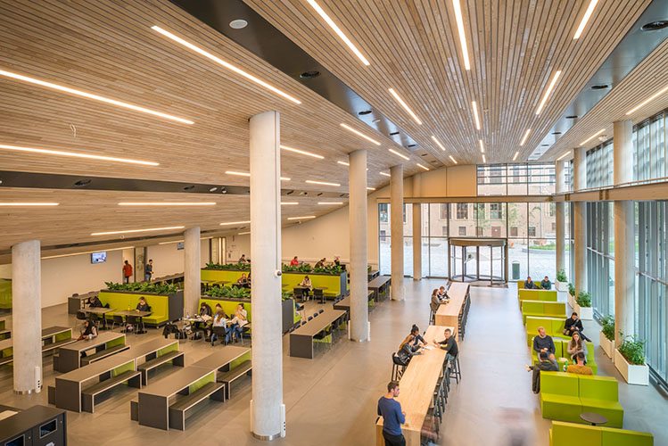
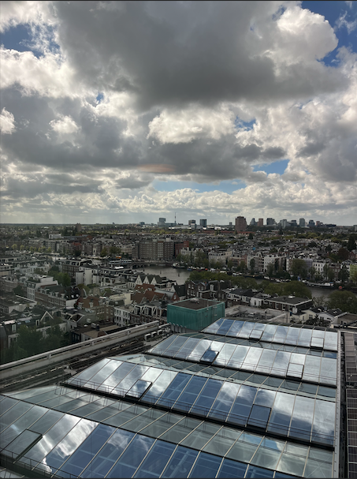
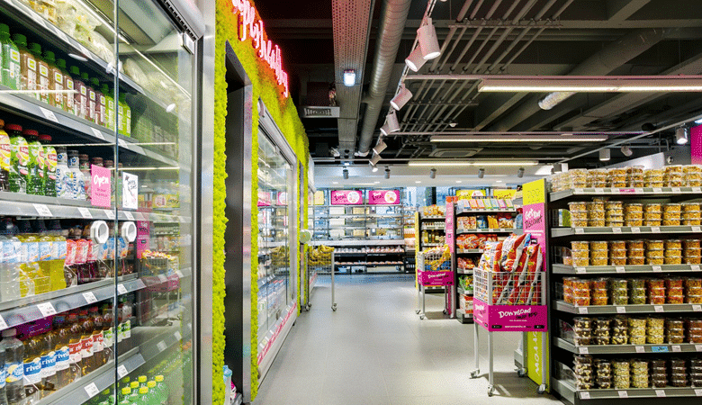
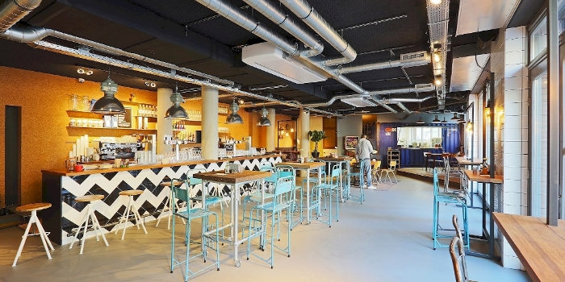
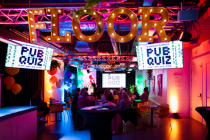

Plekken op de campus
Campus spots
-
Wibautstraat 3b

Wibauthuis Bibliotheek
De Bibliotheek van het Wibauthuis heeft studieplekken aan leestafels, werkplekken met wifi en samenwerkplekken. Je kan het vinden op de eerste en tweede etage.
-
Rhijnspoorplein 2

Dertiende Verdieping
Heb je zin in een pauze en wil je genieten van een mooi uitzicht? Dat kan! Pak een kop koppfie, neem de lift (of trap) naar de dertiende verdieping van het Jakoba Mulderhuis en kijk uit over Amsterdam.
-
Wibautstraat 3c

Spar University
Ook een kleine supermarkt ontbreekt niet op de campus. Spar University is een supermarktconcept speciaal gericht op studenten met een grab&go assortiment en leuke aanbiedingen, deals en acties.
-
Wibauthof 1

Café Fest
Je kunt hier gebruik maken van gratis WiFi, maar ook het beamerscherm reserveren om bijvoorbeeld te vergaderen. De menukaart is zowel op ochtend, middag als avond ingericht. Daarnaast biedt het café ook verschillende activiteiten.
-
Wibautstraat 3b

FLOOR: debat- en activiteitencentrum
Leer van elkaar, deel je kennis en laat je inspireren bij Floor, het debat- en activiteitencentrum van de HvA. Regelmatig worden hier leuke evenementen georganiseerd voor uiteenlopende doelgroepen, en altijd gratis.